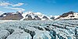

crevasse

Definition: A crevasse is a deep crack, that forms in a glacier or ice sheet that can be a few inches across to over 40 feet. Crevasses form as a result of the movement and resulting stress associated with the shear stress generated when two semi-rigid pieces above a plastic substrate have different rates of movement. The resulting intensity of the shear stress causes a breakage along the faces.
Source: Wikipedia
Wikipedia Page
Wikidata Page